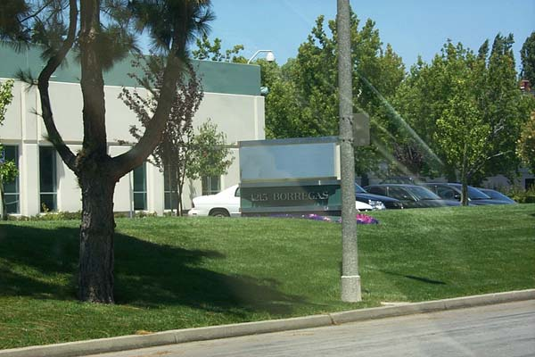

Atari's new final assembly building (finished
in 1979) replaced the old cramp quarters Santa Clara giving the employees
nearly twice the space to work.
Most were happy, others complained that their commute was now
longer. All in all it was a positive
transition for all as they were now close to all the other Atari
buildings and Santa Clara employees finally
met Sunnyvale employees whom they only knew from
phone calls back and forth between Santa
Clara and Sunnyvale Atari.